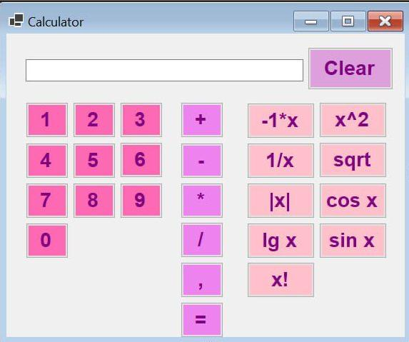
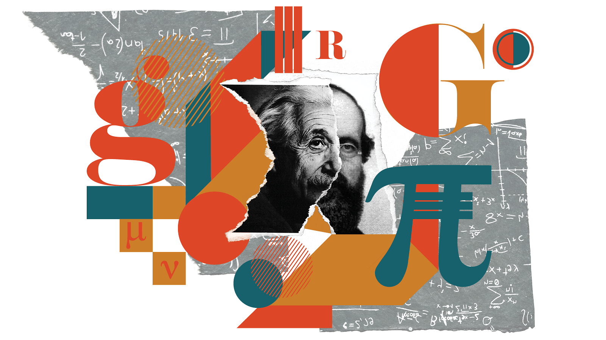
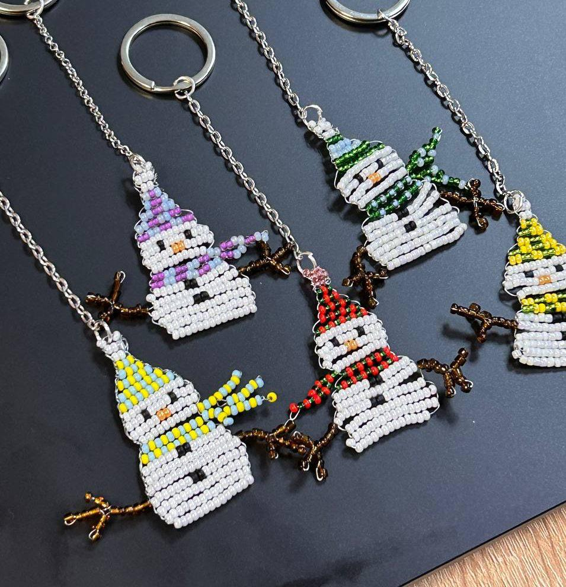
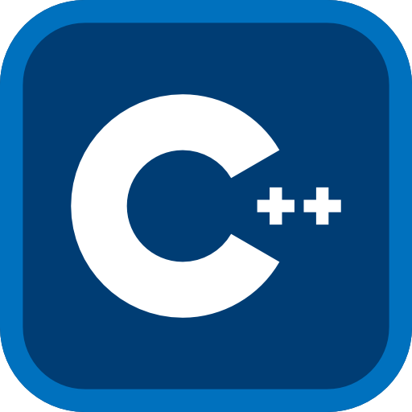
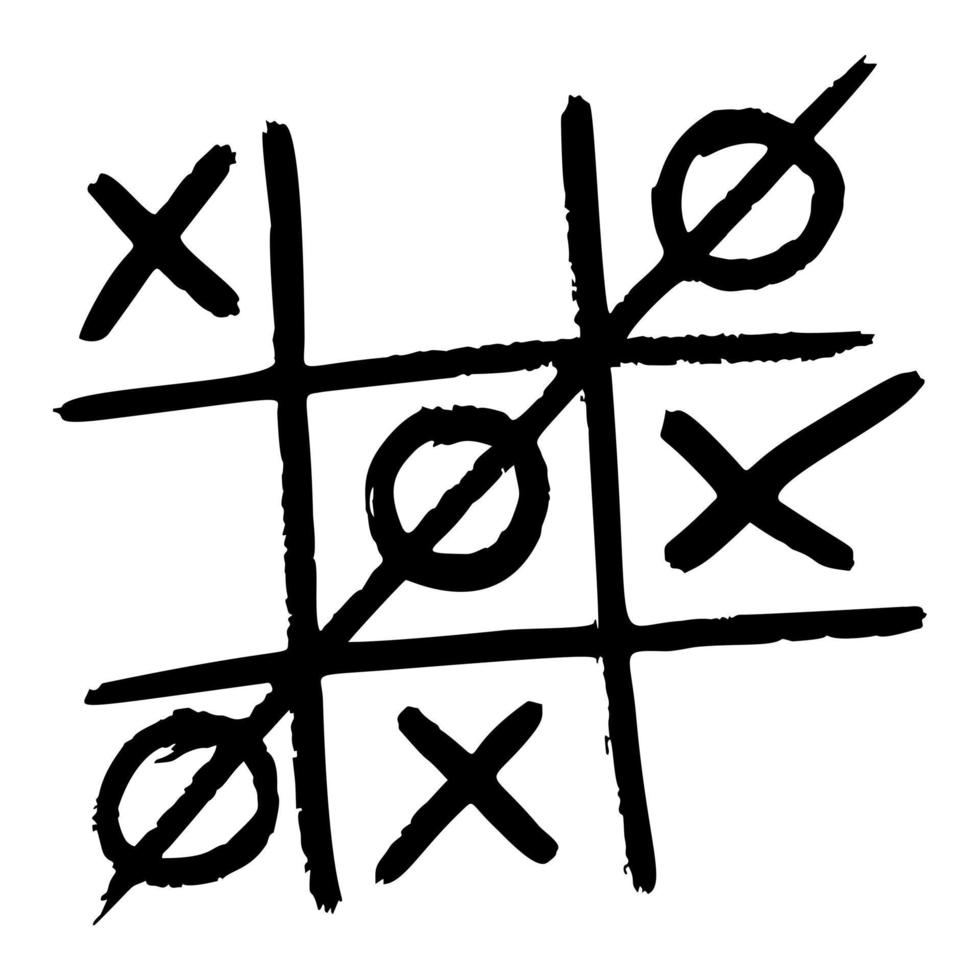
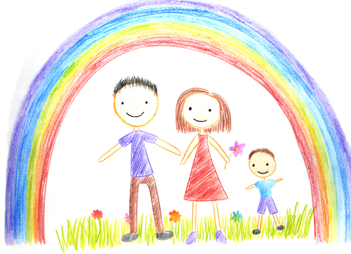

Hello, My Name is
Marharyta Starodubtseva
Self-motivated student & Proactive individual
Schools Attended
Language Fluency


I am goal-oriented, adaptable, and naturally curious, with a strong desire to learn and grow across different fields. I have a diverse skill set that ranges from programming and working with computer technologies to baking desserts and creating creative content.
My educational journey includes studying in multiple institutions and programs, which has allowed me to build a broad base of knowledge and practical skills. I adapt quickly to new environments, learn efficiently, and work well both independently and as part of a team. Thanks to my flexibility and versatility, I am able to successfully balance academic, professional, and creative projects.
Professional Skills
Ukrainian
100 %Experienced in building dynamic and powerful websites, optimizing server-side logic, and working with databases for seamless performance.
russian
100 %Native language. I am fluent in speaking, reading, and writing, and regularly use the language in daily and professional communication.
English
75-80 %Upper-intermediate level (B2). I communicate confidently in spoken and written English, understand everyday and academic texts, and use the language for learning and communication. In 2025, I have been actively preparing for the IELTS Academic exam, further improving my language skills.
Finnish
50-55 %Intermediate level (B1). I communicate independently in everyday situations and understand the main points of clear speech and texts. Throughout 2025, I have been actively studying Finnish, further improving my language skills.
C
40-45 %I have been studying the C programming language for approximately six months. I am familiar with fundamental concepts such as syntax, variables, loops, functions, and procedures, including various types of loops and conditional statements like switch-case. I also work with files, pointers, arrays, and stacks. I create small programs to practice and consolidate my theoretical knowledge.
C++
50-55 %I studied C++ for one and a half years at high school, creating a variety of programs using fundamental concepts and tools, functions, arrays, and object-oriented programming. I completed numerous practical exercises and projects. I consider that studying this language provided me with a solid foundation for learning other programming languages.
C#
40 %I studied C# for one year at high school, developing programs with graphical user interfaces using Windows Forms. I worked with classes, methods, and events, completing practical exercises and small projects. Using Windows Forms, I created a calculator and designed practice tasks to reinforce theoretical knowledge.
Python
20-30 %I started learning Python some time ago, studying basic concepts and practicing it for a short period at school. I created my final school project in this language – a Tic Tac Toe game developed with the help of a tutorial video on YouTube. I am familiar with the syntax and fundamental programming concepts in Python. Additionally, I studied Python through the youth Pre-Junior program by EPAM.
Personal Skills
mindmap
root((My personal strengths))
id)Teamwork(
Collaborates effectively
Supports team members
id)Responsibility(
Meets deadlines
Takes ownership of tasks
id)Communication(
Active listening
Clear expression of ideas
id)Creativity(
Problem solving
Innovative thinking
id)Adaptability(
Quick learner
Flexible in new situations
id)Leadership(
Guides group projects
Motivates others
Experience & Projects
- All
- Development
- STEM competitions
- Volunteering
- JASU
STEM competitions
Junior Academy of Sciences of Ukraine (JASU)
In 2021–2022, I worked with a lecturer from Donetsk State University of Management on a Junior Academy of Sciences of Ukraine project, developing a voice-input calculator in a specialized software environment. After placing third at the regional stage, I was set to compete nationally, but the event was canceled due to the occupation of my city.

Development
C# Calculator with Google Forms Integration
During my studies, I developed a C# calculator with a graphical interface that integrated with Google Forms for data processing. This project involved calculations, automating data collection, and creating a user-friendly interface.

STEM competitions
Physics & Math Battles
At Vinnytsia Physics and Mathematics Lyceum No. 17, Physics and Math Battles were held, in which I participated twice. I worked on developing and defending solutions to physics problems. For example, one task involved finding the area of a needle’s eye, which was solved using the principles of light refraction and image formation.

Volunteering
Charity Bead Weaving Workshop
I organized and led several bead weaving workshops for children aged 6–13 with a New Year theme. The participants were children who had been forced to leave their homes due to the war in Ukraine (in Vinnytsia), as part of the activities of a local NGO.

Development
Programming Exercises
During 1.5 years in high school, I studied C++, covering a wide range of materials and solving various problems. This experience helped me strengthen my knowledge and develop analytical and algorithmic thinking.

Development
Tic Tac Toe
For my graduation project, I developed a Tic Tac Toe game in Python, using YouTube tutorials to guide the programming process. This project allowed me to apply my knowledge in practice and improve my programming skills.

Volunteering
Internship at a Finnish Kindergarten
I completed a one-week internship at a Finnish kindergarten, where I assisted with daily activities, organized educational and creative games, and supported children in their learning and social development. This experience enhanced my understanding of early childhood education and intercultural communication skills.
Development
Website Layout Project
As another major assignment in computer science, I created a website for an online game store, following a tutorial on YouTube. This project helped me develop my skills in HTML, CSS, and web design principles.
Studying
Education
Mariupol Technical Lyceum
Secondary School
2021- 2022In 2021, I began studying at the Mariupol Technical Lyceum, entering the 8th grade, where I pursued advanced studies in mathematics and physics. I served as class leader and actively engaged in scientific activities, including participation in the Junior Academy of Sciences. My studies were interrupted due to the occupation of the city.
Vinnytsia Physics and Mathematics Lyceum No. 17
Secondary and High School
2022 - 2025During my studies at Vinnytsia Physics and Mathematics Lyceum No. 17, I was highly active in school life and extracurricular activities. I served as class leader, organized educational and scientific activities, and participated in physics and mathematics competitions, including Physics & Math Battles. I actively engaged in project work, developed my STEM skills, and solved complex problems. I completed both 9th and 11th grades with honors.
National Technical University of Ukraine "Igor Sikorsky Kyiv Polytechnic Institute"
F2 - Software Engineering
presentI am currently studying at the National Technical University of Ukraine “Igor Sikorsky Kyiv Polytechnic Institute” (KPI), majoring in F2. During my first semester, I completed courses in programming fundamentals and algorithm design, mathematical analysis, linear algebra, analytical geometry, and other core subjects, successfully passing my first exam session.
This semester, I am focusing on computer systems and networking fundamentals, software engineering, and modular programming, building a strong technical foundation for further growth as a future IT professional.
Hobbies
Contact Me
Address
Kohmankaari 25A 1, 33310 Tampere
starodubtceva.margarita@gmail.com
Phone
+358 46 948 8665
GitHub
- Public repositories: ...
- Subscribers:...
- Follows others: ...
- Account created: ...
- Link: Tap to profile